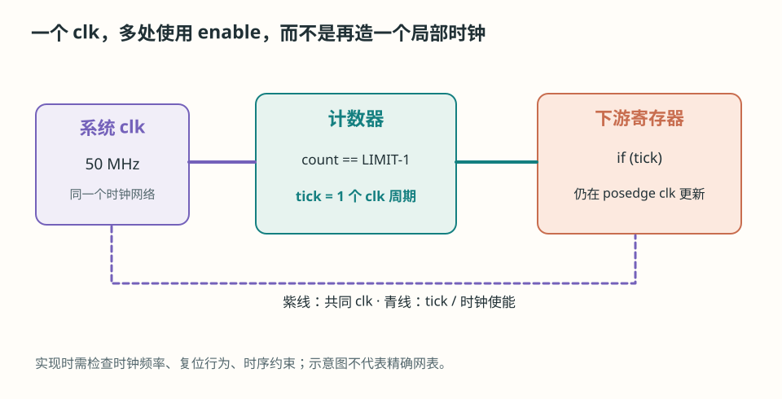
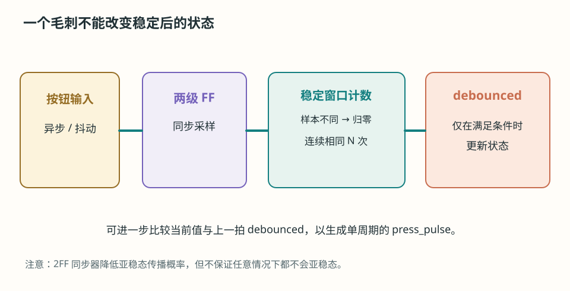

让硬件按节拍前进：计数、使能与消抖
用一个系统时钟构造计数器、单周期使能、按键同步与稳定判定，并明确复位和亚稳态的工程边界。
01 / 一个时钟和多个慢速任务
50 MHz 的系统时钟，每过 1 ms 更新一次 LED。直接将计数器输出当作新的时钟，还是在主时钟上给 LED 寄存器一个周期的使能信号？
更容易维护的基本模型是单时钟 + clock enable。 用一个计数器计出 tick，下游只在主时钟沿读到使能时更新。直接用普通逻辑生成局部时钟则涉及不同的时钟分布、约束与时钟域问题；需要专用分频/时钟资源时应单独设计并分析。

02 / 模 N 计数器与回卷沿
计数状态 0 → 1 → … → N-1 → 0；tick 在回卷边沿后为高，保持一个时钟周期。参数必须满足 MODULUS ≥ 2 且 2^CW ≥ MODULUS。这个教学模块不对无效参数自动做静态报错。
module tick_counter #(
parameter integer MODULUS = 5,
parameter integer CW = 3
) (
input wire clk, rst_n, en,
output reg [CW-1:0] count,
output reg tick
);
always @(posedge clk) begin
if (!rst_n) begin
count <= 0;
tick <= 0;
end else begin
tick <= 1'b0;
if (en) begin
if (count == MODULUS - 1) begin
count <= 0;
tick <= 1'b1;
end else count <= count + 1'b1;
end
end
end
endmodule当 MODULUS=5，五个有效使能沿以后，count 回到 0，tick 置 1。注意：如果在另一个时钟过程写 if (tick)，它会在下一个时钟沿消费这个已寄存的 tick。RTL 的非阻塞赋值在当前沿计算 RHS，之后提交 LHS。
BCD 计数器在 9 后回卷；饱和计数器在上限保持；它们解决不同的状态转移需求。偶数频率分频器可以让一个 FF 周期性翻转，但若把翻转输出用作全局时钟，必须按派生时钟进行布线和约束，而不应偷换成无代价的 clock enable。
03 / 异步按钮需要两种过滤
机械触点会在一次按下时反复跳变，同时按键相对芯片时钟是异步输入。同步器降低亚稳态传播风险；稳定窗口计数滤除数字意义上的抖动。仅加延时不等于完成 CDC。

module debounce #(
parameter integer STABLE_CYCLES = 4,
parameter integer CW = 3
) (
input wire clk, rst_n, noisy,
output reg level
);
reg meta, synced;
reg [CW-1:0] stable_count;
always @(posedge clk) begin
if (!rst_n) begin
meta <= 0; synced <= 0;
stable_count <= 0; level <= 0;
end else begin
meta <= noisy;
synced <= meta;
if (synced == level)
stable_count <= 0;
else if (stable_count == STABLE_CYCLES-1) begin
level <= synced;
stable_count <= 0;
end else
stable_count <= stable_count + 1'b1;
end
end
endmodule例如要求 20 ms 的稳定窗口，在 50 MHz 下是 1,000,000 次采样，需要足够宽的计数器。这里小参数只是为了让仿真快速跑完。物理实现应给同步器添加器件合适的约束或属性，并确认复位策略；两个 FF 并不能提供零亚稳态概率。
04 / 移位寄存器、LFSR 与边沿检测
移位寄存器能构造串并转换器：一次采样移动一格。串行输入进入最低位的 4 位例子如下：
reg [3:0] shift;
always @(posedge clk) begin
if (!rst_n) shift <= 4'b0000;
else if (en) shift <= {shift[2:0], serial_in};
endLFSR 使用异或反馈在有限状态集合中生成确定性循环。它的周期依赖具体反馈多项式、位数和初态；不能仅因为“用了 XOR”就保证最大周期，也不是密码学随机源。检测按钮按下沿则应比较经过消抖的当前状态与上一拍状态，产生一个时钟宽的 press_pulse。
05 / 可复现实验和失败条件
iverilog -g2012 -Wall -s tb_tick_counter -o /tmp/tick.vvp examples/rtl/tick_counter.v examples/tb/tb_tick_counter.v
vvp /tmp/tick.vvp
iverilog -g2012 -Wall -s tb_debounce -o /tmp/debounce.vvp examples/rtl/debounce.v examples/tb/tb_debounce.v
vvp /tmp/debounce.vvp测试检查使能停止时 count 保持、回卷 tick 的宽度、短抖动不触发输出，以及同步后连续稳定若干周期才改状态。通过功能仿真不代表 FPGA 已完成 STA、复位释放检查或 CDC 分析。
为什么下游的 if (tick) 可能在回卷后下一个沿才更新？
tick 是本沿由计数器寄存器输出的新值，下游独立 always 在同一时钟沿采样的是 tick 旧值，所以下一沿才消费新 tick。